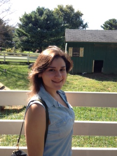
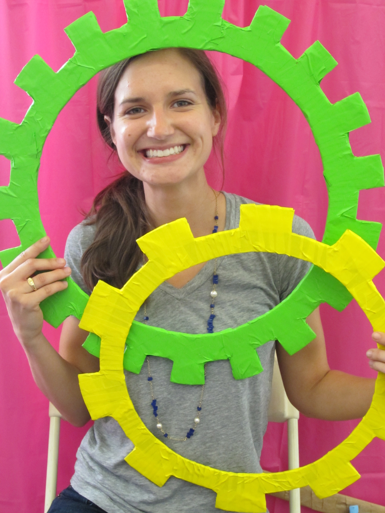
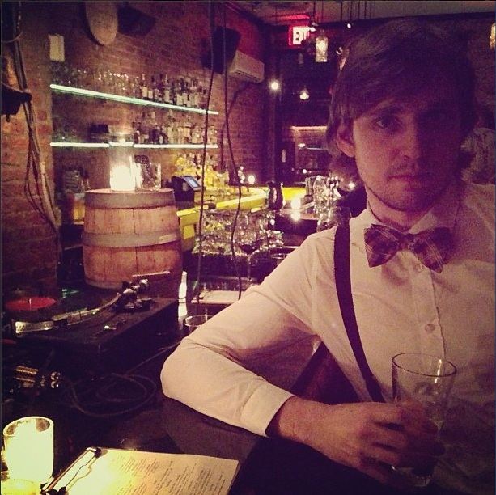
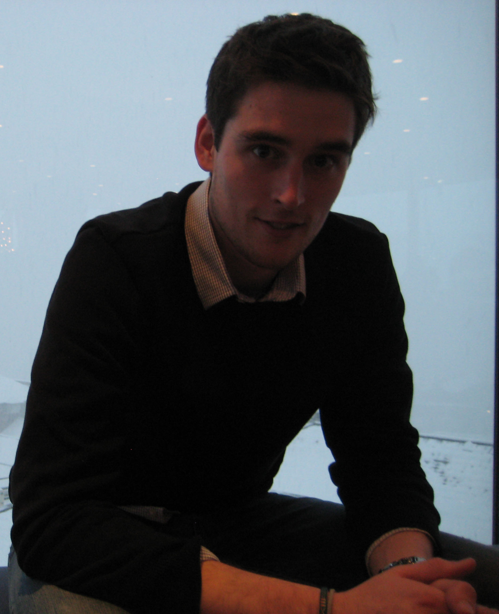
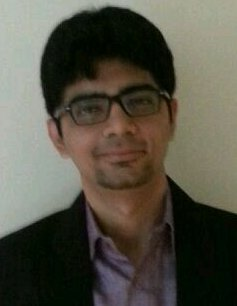
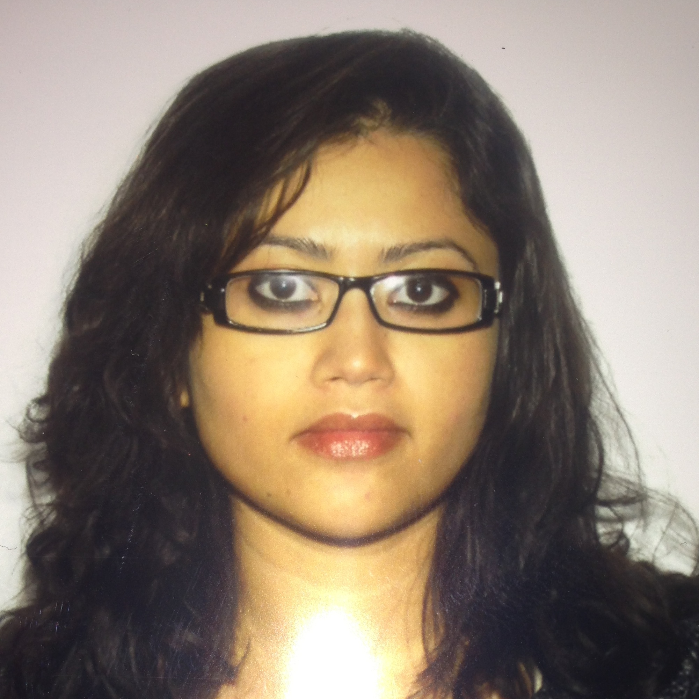
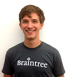
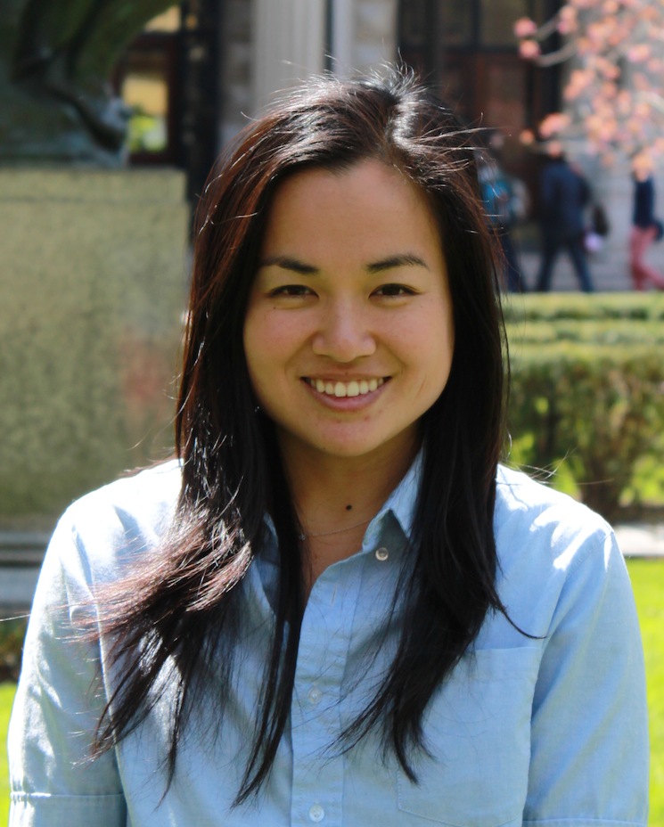
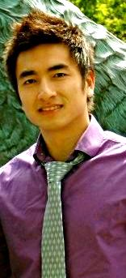

Applied Mathematics
 Deanna Tufano graduated from Columbia University with a B.S in Applied Mathematics in May 2013 and is currently a first year graduate student pursuing an M.S in Applied Mathematics. While she loves her department, she also enjoy statistics and gave a presentation on Statistical Machine Translation for her senior seminar. Outside of academics, she likes to consider herself a real foodie. She loves trying new restaurants around the city and enjoy experimenting with new recipes at home.
Biomedical Engineering
Gwen Effgen received her B.A. in physics from the Department of Physics & Astronomy at Barnard College in May 2010 and enrolled in the M.S. leading to Ph.D. program in the Department of Biomedical Engineering at Columbia University September 2010. Gwen has been a member of the Neurotrauma & Repair Laboratory under the direction of Dr. Barclay Morrison III since June 2009. Her research interests include development of in vitro models of traumatic brain injury to determine the pathobiology of repetitive mild traumatic brain injury and blast-induced traumatic brain injury. At Columbia University, Gwen founded and served as president of the Society of Women Engineers Graduate Student Group (GradSWE). She has served as secretary for the Biomedical Engineering graduate student group (2011-12), co-host for the Womensphere Emerging Leaders Global Summit 2013, NYC Tech Connect Entrepreneurial Scientist Advisory Board member (2012-present), and presenter at the Society of Women Engineers WE'12 national conference.
Matthew Downs is from Florida and graduated from the University of Florida in 2009 with a B.S. in Materials Science & Engineering specializing in polymer science. He worked in a nanobiotechnology lab and focused on developing molecular shuttles for lab-on-a-chip devices. He also spent two summers abroad working on modeling the aforementioned devices at Gifu University in Japan and at ETH Zurich in Switzerland. He completed his M.S. in Biomedical Engineering at Columbia University with work focused on modeling the mechanics of the primary cilium. His research interests include cognitive neuroscience and ultrasound therapy. When not in the lab he attempts to cook, rollerblade and wander most of NYC.
Chemical Engineering
Kevin Dooley is a 4th year PhD student in the Chemical Engineering department. He works in Scott Banta's lab where the focus is on using protein and metabolic engineering for a host of applications including smart materials and biofuels production. Outside of the lab, he enjoys baseball and playing the guitar.
Civil Engineering and Engineering Mechanincs
 Kunal Devnani
enjoys swimming, water polo and photography.
Kunal Devnani
enjoys swimming, water polo and photography.
Computer Science
Amit Ruparel is in the third semester of the Masters program in Computer Science specializing in NLP. He got his Bachelor's degree from University of Mumbai in India. He's involved with the EGSC & ISAC at Columbia University.
Industrial Engineering and Operations Research
 Erica Xiong
is originally from southern China, Erica currently studies
Management Science and Engineering at SEAS. Pior to graduate school,
Erica studied Finance as undergraduate major in Beijing, China.
Erica has a broad range of interests, including: backpacking, mixology, pop music.
Erica Xiong
is originally from southern China, Erica currently studies
Management Science and Engineering at SEAS. Pior to graduate school,
Erica studied Finance as undergraduate major in Beijing, China.
Erica has a broad range of interests, including: backpacking, mixology, pop music.
Semonti Sinharoy is a 2009 graduate of the MSOR program, currently working as a Business Analyst at AIG . She manages a major Database and reporting system buildout essential to the success of a Data Center migration initiative taken up by AIG. She came to USA from India, on full scholarship, to complete her undergrad in Plastics Engineering Chemistry - after which she decided to go for a career change by pursuing the Masters in OR from Columbia University. She is passionate about travelling and good food!
Institute For Data Sciences And Engineering
Andrew Enkeboll is a die-hard Vanderbilt Commodores fan, where he studied Computer Engineering. Previously a high school math teacher, he is currently studying Data Science at Columbia University and is probably at a concert right now.
Mechanical Engineering
Kyoko Yoshida is a PhD student in the Mechanical Engineering department. Her research is focused on investigating the mechanical properties of the cervix throughout pregnancy, and how it can help prevent preterm birth. In her free time, she enjoys sewing, thrift ing, riding her bike really fast around the city, and finding cheap and good places to eat.
Structural Engineering
 Raymond Chan graduated from UConn with a B.S. in Civil Engineering and had worked as a structural engineer for a nuclear engineering firm. He is currently studying structural engineering for his masters and is a huge sports fan who enjoys playing basketball.